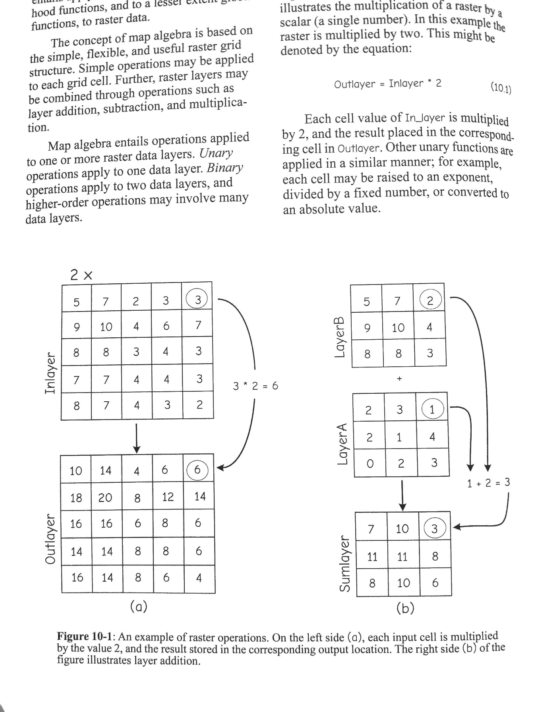
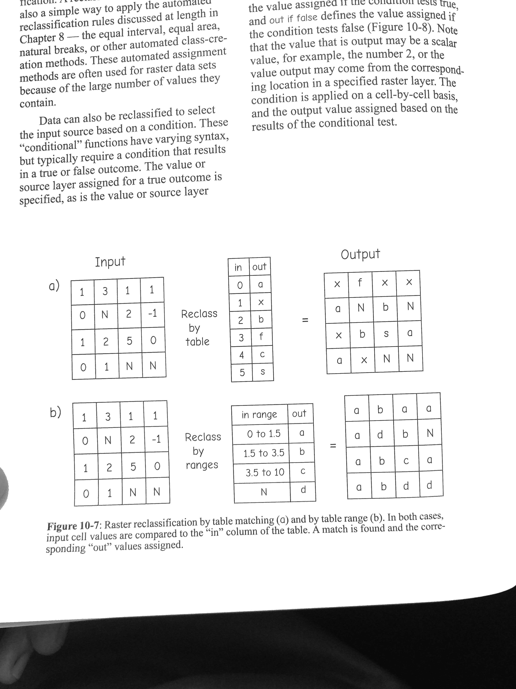

Map algebra + reclass
Map algebra
Map algebra is applying mathematical and logical operations to raster cells.
- Unary: one raster input (e.g., multiply by 2).
- Binary: two raster inputs (e.g., add two rasters cell-by-cell).
- Higher-order: many layers and conditions (e.g., suitability model).
Underneath, it’s “grid math.” The important part is understanding what each cell’s output depends on.
Example (from the slides)
Unary and binary examples: multiply a raster by a scalar; add two layers cell-by-cell.
Reclassification
Reclassification remaps values into new classes. Common uses:
- Convert continuous values into bins (e.g., slope classes).
- Clean up noisy categories (merge classes).
- Prepare inputs for overlay (e.g., 1–9 suitability scores).
Always document your class breaks — they are analytical choices.
Reclass example
Reclassifying can be done by exact values or by ranges.
